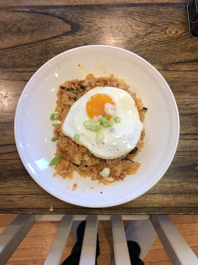

Kimchi Fried Rice

Description
Alright ya'll time to learn how to make kimchi fried rice the proper Korean way (my girlfriend taught me).
First of all, call it kimchi-bokkeum-bap.
Second, you're gonna want to use leftover rice and some over-ripened kimchi for the best results.
Finally, this is gonna be easy, so don't trip homie.
Ingredients
- Kimchi with a bit of extra funk
- Leftover white rice, preferably glutinous
- One can of tuna (Dongwon light standard tuna is the best)
- One egg
- Chopped scallions and sesame seeds (optional, as garnish)
Steps
- Chop the kimchi into bite-sized pieces
- Preheat the rice in the microwave so that it's nice and warm
- Heat up a pan with a bit of oil
- Plop the tuna in, break it up, and let it cook a bit
- Add the kimchi, cook until it gets a bit translucent
- Add the rice, stir it in thoroughly
- If it seems too dry, add more kimchi or kimchi juice
- Remove the stir fry from heat once it's well mixed and plate it
- Fry an egg in the pan you were just using #savewater
- Top the stir fry with the fried egg, and the scallions and sesame seeds if you're into it
- Bon appetite fam